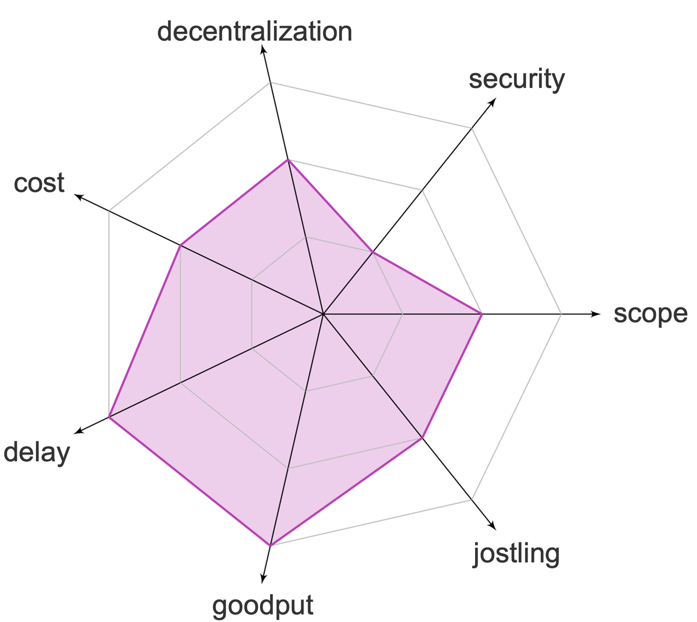

Positives

- Gooput stays unchanged

Negatives

- Medium Scope as back-running still possible
- Bad security as attacks still possible
- Reduced decentralization
- Increased costs
- Jostling increased
- Significant delay
In algorithmic committee ordering schemes, a committee oversees the transaction ordering. Transactions are sent directly to the committee and the committee agrees upon a fair ordering through consensus. Generally, these approaches can handle less than one third of the committee members being byzantine.
This page is mantained by the Distributed Computing group at ETH Zürich. We are not liable for any false information.
Copyright © 2023 Distributed Computing Group, ETH Zürich